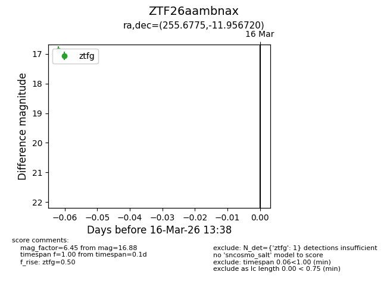
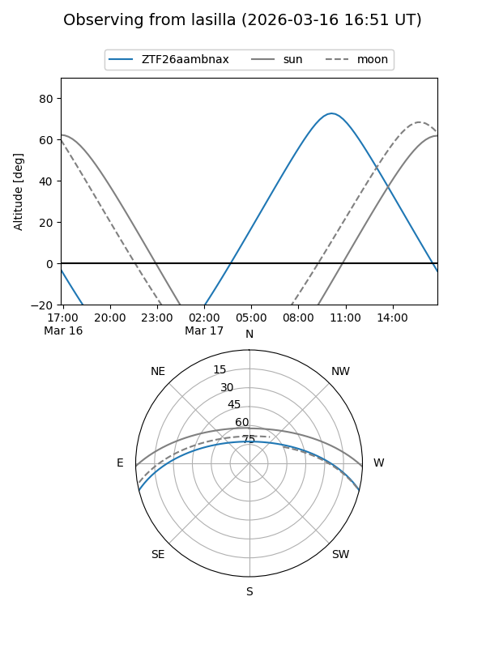
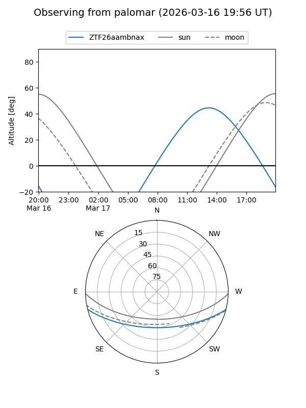

ZTF26aambnax
Target ZTF26aambnax at 2026-03-16 13:40
Aliases and brokers:
FINK: link
Lasair: link
ALeRCE: link
alt names
ZTF26aambnax (ztf,fink_ztf)
Coordinates:
equatorial (ra, dec) = 255.6775,-11.95672
equatorial (HMS+DMS) = 17:02:42.61,-11:57:24.19
galactic (l, b) = (8.8936,+17.65436)
Flags:
Photometry:
last ztfg=16.88
1 ztfg detections
Lightcurve

Visibility


Additional plots